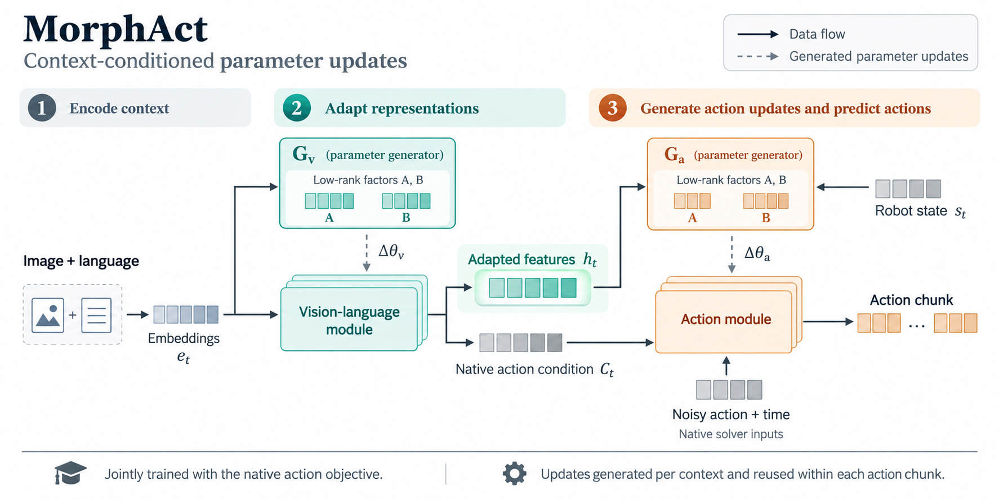

Read the context
Image and language embeddings condition low-rank updates for the vision–language module.
01 / The idea
A single task brings changing perceptual and control demands. MorphAct learns one shared rule that generates low-rank parameter updates for the current context.

02 / How it works
Adapt what the policy sees, then use that representation to adapt how it acts.

Image and language embeddings condition low-rank updates for the vision–language module.
Adapted representations and robot state condition the action-side generator.
Train with the native action objective and reuse generated updates within each action chunk.
03 / In simulation
Higher average closed-loop success on LIBERO and Meta-World for all three backbones.
40 tasks · 4 suites · 50 rollouts per task
BaselineMorphAct
+3.55 percentage points
+2.50 percentage points
+0.50 percentage points
Metric: mean success rate across Spatial, Object, Goal, and Long (LIBERO-10). Bars use a 0–100% scale. Long has the largest gain for each backbone; individual suite scores vary.
50 tasks · 4 difficulty groups · 20 rollouts per task
BaselineMorphAct
+7.27 percentage points
+13.73 percentage points
+15.13 percentage points
Metric: unweighted average of Easy (28 tasks), Medium (11), Hard (6), and Very Hard (5) group success rates. Bars use a 0–100% scale. This is a group average, not a task-weighted MT50 average.
Results and evaluation settings are reported in the manuscript. Gains denote absolute percentage-point differences.